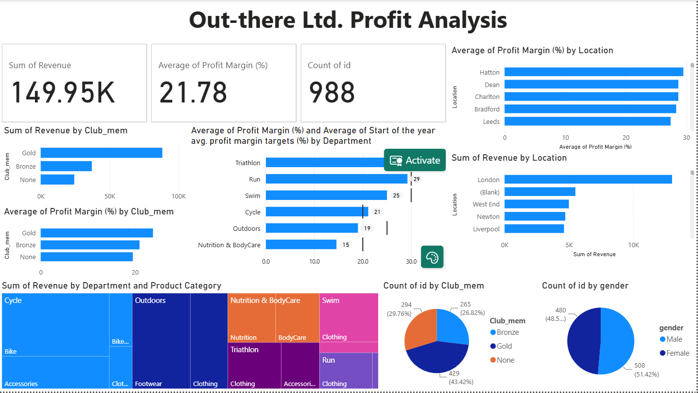

Research design ↗
Questionnaires, discussion guides, sampling, quotas, screening criteria, focus groups and depth interviews.
Market research project manager, turning insight into decisions. I deliver quantitative and mixed-method research across FMCG, healthcare and pharmaceutical clients.
I’m a market research project manager with 4+ years of agency experience, delivering 100+ international quantitative and mixed-method studies across the UK, Europe, North America and APAC.
At Quest MindShare, I progressed from Sampling Executive to Research Project Manager in three years. I managed 15–20 projects at a time for FMCG and healthcare clients, including pharmaceutical studies in oncology, dermatology and nephrology. As the main contact for senior client stakeholders, I owned each project from start to finish: scoping, questionnaire scripting, fieldwork and quotas, suppliers, recruiters and moderators, data checks, and budgets and margin.
In January 2026 I completed an MSc in Marketing Research and Analytics at Manchester Metropolitan University with Merit, and received the department’s Best Performing Student Prize. My dissertation examined the role of market research in understanding sustainable fashion buying among UK Gen Z, using survey data and regression analysis in SPSS. I also hold an MBA in Marketing from NMIMS and a BCom from the University of Delhi.
Markets: UK, Europe, North America and APAC · Sectors: FMCG, healthcare and pharmaceuticals.
Questionnaires, discussion guides, sampling, quotas, screening criteria, focus groups and depth interviews.
SPSS, multiple regression, Pearson correlation, cross-tabulation, thematic analysis, Power BI and Google Analytics 4.
Scoping, client liaison, fieldwork and quotas, suppliers, budgets, margin, data checks and senior stakeholder communication.
Clear PowerPoint debriefs, visual storytelling and recommendations that help senior stakeholders make decisions.
MSc dissertation using a structured online questionnaire and SPSS analysis. Attitude and subjective norms were the strongest positive predictors of sustainable purchase intention.
View dissertation work ↗Power BI dashboard covering department performance, customer distribution, product categories, revenue, profit and membership analysis.
View Power BI work ↗Reach, Act, Convert and Engage assessed against industry benchmarks. Traffic was growing while loyalty and conversion remained opportunities.
View GA4 work ↗MSc live client brief combining focus groups, questionnaire design, audience insight, competitor review, SWOT analysis and campaign planning.
View GamesterInc work ↗Applied marketing research exploring Eclipse Polar Ice product performance, positioning, messaging, awareness and a follow-up study design.
View Wrigley case ↗A practical comparison of SPSS regression and AI-assisted interpretation using the same sustainable-fashion research data from 132 UK Gen Z respondents. The comparison found that SPSS identified statistical significance, while AI surfaced relationships, reliability concerns and questions for further investigation.
Read article details ↗Market research project management across oncology, dermatology and nephrology studies, with client and respondent details withheld.
View case summary ?An MSc dissertation exploring how digital and psychological factors shape sustainable fashion purchase intention and recent behaviour.
Positivist philosophy with a quantitative, cross-sectional design. A 25-item online questionnaire used five-point Likert scales and targeted UK-based Gen Z respondents aged 18–27.
Descriptive statistics, Pearson correlations and multiple regression examined attitude, subjective norms, perceived behavioural control, brand authenticity, price sensitivity, social media influence and purchase intention.
The model explains 60.1% of the variance in sustainable purchase intention. Attitude and subjective norms were the strongest positive predictors.
The model explains 51.3% of the variance in recent sustainable behaviour. Purchase intention was the strongest predictor of recent sustainable behaviour.
A team project combining secondary research, primary research, audience insight, campaign planning and a client-ready presentation for GamesterInc.
Questions explored prior use of gamified learning, ease of navigation, effectiveness for construction concepts, comparisons with traditional methods, improvements and future interest in the Trail app.
Covered attitudes to gamified learning, benefits of interactive learning, engagement motivators, preferred learning methods, industry-update platforms and use of gamified learning in study.
Contributed to the four-page project plan, client liaison, report and presentation design, editing, proofreading, secondary research, ethics documentation, primary research, analysis and campaign planning.
Developed an 18-year-old student persona, mapped a lecturer buyer persona, reviewed competitors and contributed to the SWOT analysis, campaign ideas and measurement plan.
A dashboard-focused project using department-level KPIs to compare average profit margin against target.

The dashboard showed average profit margin by department against the start-of-year target, helping identify where performance improvement should be prioritised.
Custom bullet chart, heatmap, linear gauge and slicer visuals support a practical decision view.
Quest MindShare
Ran 15–20 quantitative and mixed-method projects concurrently for FMCG, healthcare and pharmaceutical clients. Designed questionnaires, managed fieldwork and quotas, suppliers, data checks, budgets and margin, and delivered insight reports to senior client stakeholders.
Quest MindShare
Supported project delivery for B2B and consumer insight studies, coordinating respondent specifications, quotas, online panels, fieldwork updates and client-ready outputs.
Quest MindShare
Managed sample feasibility, respondent specifications and quotas, monitored online panels, and produced charts and cross-tabulations for international research studies.
Manchester Metropolitan University · 2025–2026
NMIMS, India · 2021–2023
PMI Project Management Ready, Google Analytics 4, SPSS Statistics Essential Training, Customer Insights & Consumer Analytics, Career Essentials in Project Management, Canva for Web and Digital Design, Generative AI (Snowflake), LLM Fundamentals and Prompt Engineering, and Atlassian Agile Project Management.
University of Delhi · 2017–2020
Happy to walk through any of the projects above in more detail.